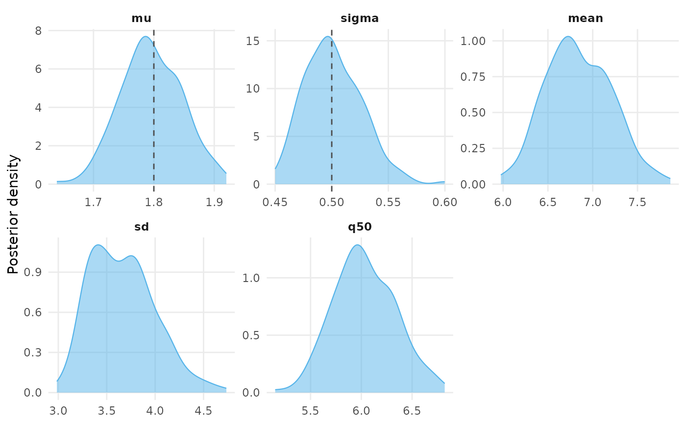
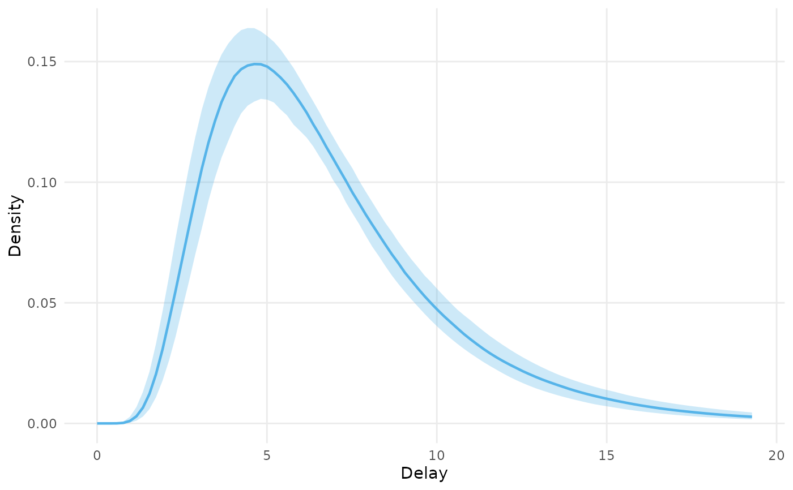
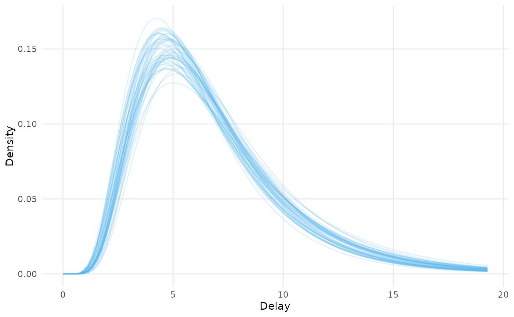

Plots the draws returned by delay_parameter_draws(),
delay_summary_draws() and add_summaries(). The default,
type = "parameters", draws the posterior density of each distributional
parameter, and of any summary column add_summaries() added, in its own
panel. type = "delay" draws the delay distribution the draws imply over a
grid of delays, as the posterior median density with a ribbon between two
quantiles, or as one line per draw when ndraws is given.
Arguments
- x, object
An
epidist_delay_drawsobject, as returned bydelay_parameter_draws(),delay_summary_draws()oradd_summaries().- ...
Passed from
plot()toautoplot(). Unused otherwise.- type
Either
"parameters", the default, to plot the posterior density of each parameter, or"delay"to plot the delay distribution the draws imply.- by
A character vector of columns of
objectthat define the strata to colour by. IfNULL, the default, the variables recorded onobjectare used. See the details.- pars
A character vector of the columns to plot when
type = "parameters". IfNULL, the default, the distributional parameters of the family are plotted, along with themean,sdand quantile columns present.- true_values
A named numeric vector of true parameter values to mark with dashed vertical lines when
type = "parameters". The names must be among the parameters plotted.- ndraws
The number of draws per stratum to plot the delay distribution of when
type = "delay", one line each, sampled at random. IfNULL, the default, the posterior median density is drawn with a ribbon between theprobsquantiles instead.- probs
A numeric vector of two probabilities giving the quantiles the ribbon spans when
type = "delay". Defaults toc(0.05, 0.95).- max_delay
The largest delay to evaluate the delay distribution at when
type = "delay". IfNULL, the default, the posterior median of the 99% quantile of the delay distribution is used.- family
A model fit with
epidist(), abrmsfamily, or the name of one, giving the delay distribution. IfNULL, the default, the family recorded onobjectis used.
Details
The strata of the draws are coloured. By default they are the unique
combinations of the variables in the distributional parameter formulas,
which delay_parameter_draws() records, and each .row when the draws
have several rows of newdata but no such variables. Pass by to
stratify by other columns of the draws. The columns in by are kept in the
plot data, so the plot can be faceted by them.
The delay distribution is evaluated with the density of the family for the
lognormal, gamma and Weibull families. For any other family, delays are
simulated from each draw as in add_summaries() and their density is
estimated with stats::density(). Either way the density is evaluated at
every draw, so thin the draws with the ndraws argument of
delay_parameter_draws(), or build newdata with epidist_strata(),
when there are many.
plot() and autoplot() are the same function. Both need ggplot2.
The plot is drawn with ggplot2::theme_minimal() and the colour blind
friendly palette the package documentation uses. Add a theme or a scale of
your own to the returned plot to override either.
See also
delay_parameter_draws() and delay_summary_draws() for the
draws, and plot_events() to plot the data.
Other plot:
plot_events()
Examples
draws <- data.frame(
mu = rnorm(200, 1.8, 0.05),
sigma = exp(rnorm(200, log(0.5), 0.05))
) |>
add_summaries(family = "lognormal", probs = 0.5)
plot(draws, true_values = c(mu = 1.8, sigma = 0.5))

plot(draws, type = "delay")

plot(draws, type = "delay", ndraws = 50)
